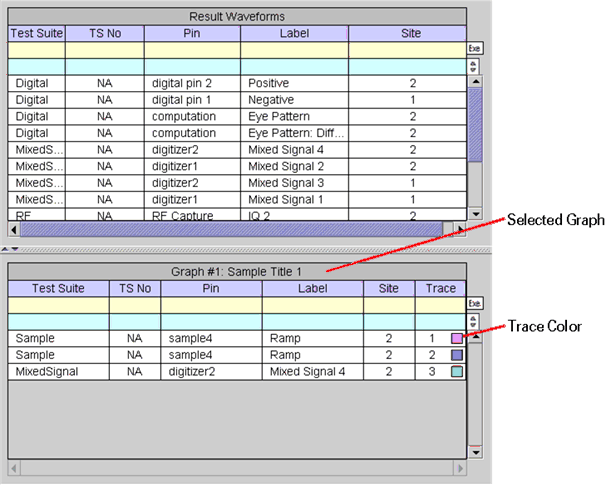
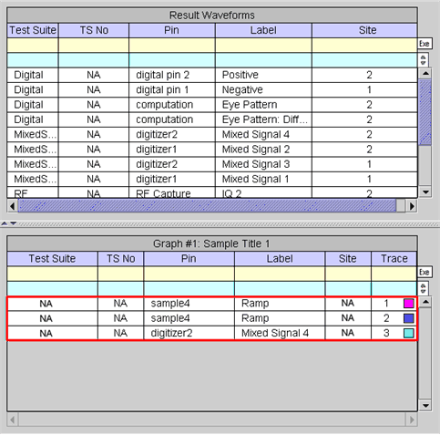

Selected Graph
Each waveform listed in the Waveform Navigator Tool (WNT) can be categorized as a result waveform and/or selected graph. Waveforms in the selected graph category are those displayed in the selected (active) Data Display Panel in the Waveform Graphs Tool (WGT). Refer to the following screen.

The "Graph #(graph ID): (title)" displayed in the header represents the graph ID used as the identifier of the selected (active) Data Display Panel of the WGT along with the title.
Each row of the table is identified by the test suite name, test suite number, pin name, test label, site number, and trace ID.
The small colored boxes in the Trace column correspond to the color of the traces displayed in the selected Data Display Panel of the WGT.
With the exception of the filter tool and search tool cells, the cells corresponding to the waveforms cannot be edited.
The letters "NA" appear in a cell if the corresponding identifier is not applicable for the waveform. For example, a waveform generated with the User Defined Function does not have a test suite name, test suite number, or site number because a User Defined Function is not related to the general test execution. Refer to the following example.
